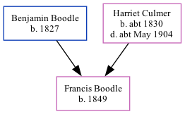

Francis Boodle 1849 -
[ Home ] | [ Calendar ] | [ Surnames Index ] | [ Family History ]The child of Benjamin Boodle (an agricultural laborer) and Harriet CulmerFrancis Boodle, the first cousin three-times-removed on the mother's side of Nigel Horne, was born in Blean, Kent, England in 18491,2.
Throughout her life, she lived at Clapham Hill in Blean on Mar 30, 18511; and at New Road in Blean on Apr 7, 18612.
Parents
- Benjamin was born in 1827
- Harriet was born c. 1830
Citations
- 1851 England, Wales & Scotland Census - Findmypast (was age 2 and the daughter of the head of the household)
- 1861 England, Wales & Scotland Census - Findmypast (was age 12 and the daughter of the head of the household)
Family Tree
Generated by ged2site. Last updated on Nov 13, 2024